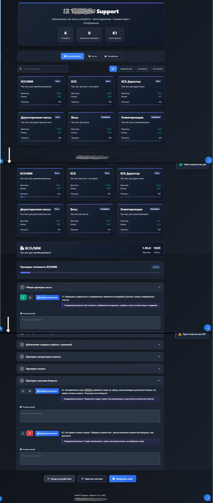

Практические реализации
Внедрение системы автоматического документирования
Контекст: Команда разработки из 15 человек тратила до 8 часов на подготовку релиз-нот. Документация была разрозненной, версионирование отсутствовало.
Задача: Создать единый процесс документирования, сократить время подготовки релиз-нот на 70%.
Решение:
- Миграция всей документации на Markdown + Git
- Разработка шаблонов релиз-нот с валидацией обязательных полей
Формализация процессов развертывания POS-системы
Контекст: Процесс обновления кассового ПО в 200+ точках был нестандартизирован, что приводило к ошибкам и простоям.
Задача: Создать четкий регламент развертывания с контролем качества на каждом этапе.
Решение:
- Разработка BPMN-диаграмм для всех сценариев развертывания
- Внедрение MESH Central для централизованного управления конфигурациями
- Создание pipeline сборки и дистрибуции билдов
- Разработка чек-листов валидации после установки
Результаты:
- Стандартизированный процесс для команды из 12 человек
- Сокращение ошибок развертывания на 80%
Процесс развертывания ПО
Интерактивные инструменты для службы поддержки
Контекст: Специалисты поддержки тратили 30+ минут на диагностику типовых проблем с оборудованием TealPOS.
Задача: Сократить время обработки запросов на 30% через автоматизацию диагностики.
Решение:
- Разработка интерактивных чек-листов на чистом HTML/CSS/JS
- Адаптивный дизайн для работы на ПК, планшетах и смартфонах
- Система сохранения прогресса и комментариев для коллег
Результаты:
- Время диагностики сокращено с 30 до 10 минут
- Стандартизация процесса для 15+ специалистов поддержки
- Автоматическое формирование отчетов о диагностике
- Снижение нагрузки на вторую линию поддержки на 40%
Электронный чек-лист оборудования TealPOS
Ключевые возможности: 25+ контрольных точек, интеграция с API оборудования, автосохранение прогресса, экспорт отчетов.
Централизованная система знаний на базе Wiki.js
Контекст: Техническая документация POS-системы (300+ страниц) была разрозненной, поиск информации занимал до 15 минут.
Задача: Создать единую точку входа для всей документации с удобной навигацией и поиском.
Решение:
- Развертывание Wiki.js как централизованной платформы знаний
- Структурирование по доменам: архитектура, API, оборудование, сценарии
- Внедрение перекрестных ссылок между 150+ документами
- Миграция и стандартизация существующей документации
- Настройка ролевой модели доступа для разных категорий пользователей
Результаты:
- Время поиска информации сокращено с 15 до 2 минут
- Единая точка входа для 50+ пользователей
- Снижение количества обращений в поддержку на 35%
- Автоматическое резервное копирование и версионирование
Примеры реализации в Wiki.js

Вводные инструкции
Быстрый старт для новых сотрудников
Главный портал
Централизованный доступ к знаниям
API документация
Эндпоинты, примеры, спецификации
Релиз-ноты
Версии 1.0 - 2.1 с изменениями
Обновления системы
Версии 2.2+ с новыми возможностями
Раздел поддержки
FAQ, диагностика, решение проблем
Пользовательские сценарии
Рабочие процессы и бизнес-кейсы
Технические модули
Архитектура, компоненты, интеграции
Контакты для обсуждения сотрудничества
Электронная почта
asanovnikita@icloud.com
Телефон / Telegram
+7 989 344-23-90